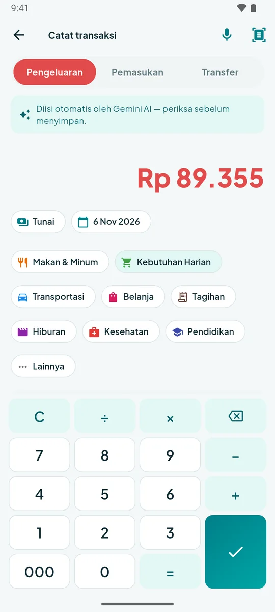
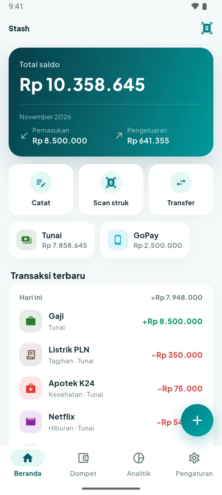
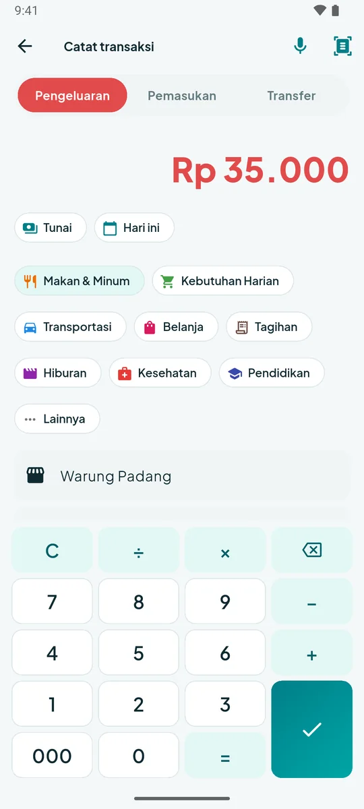
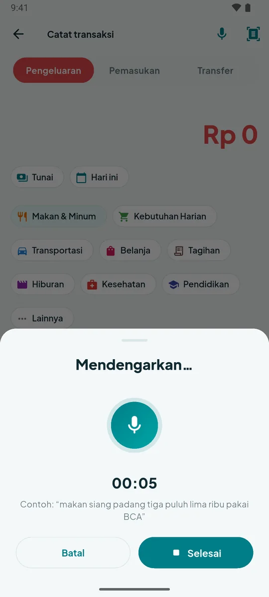
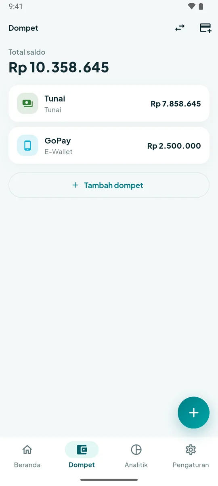
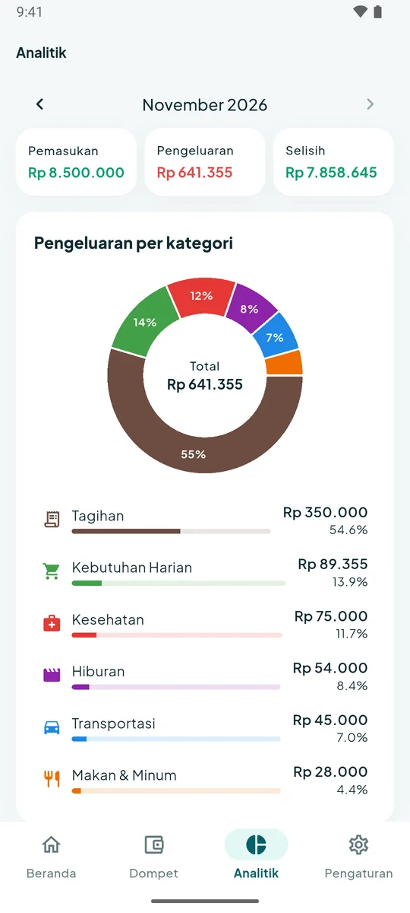
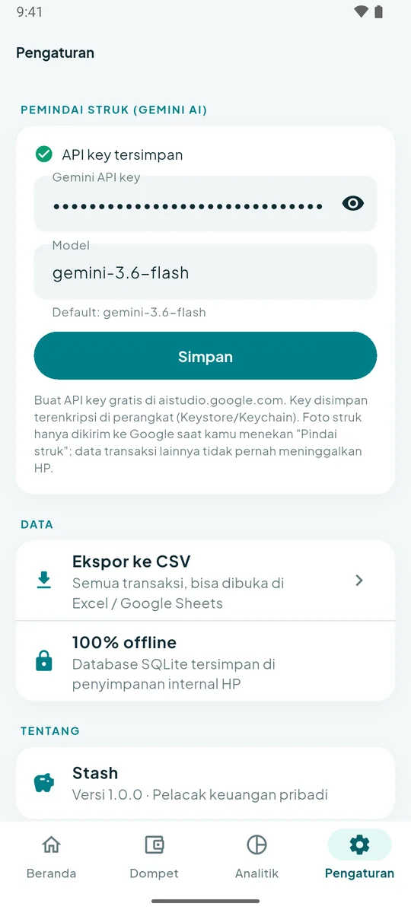

Scan struk dengan Gemini AI
Foto struk belanja, lalu total, nama toko, tanggal, dan kategori terisi otomatis. Total akhir dibaca dengan benar, bukan angka tunai atau kembalian.
Stash mencatat pengeluaran dan pemasukan dalam hitungan detik. Foto struknya atau cukup ucapkan transaksinya, dan Gemini AI mengisikan sisanya. Datamu tetap tersimpan di HP-mu sendiri.


Dibuat sederhana: sedikit layar, sedikit ketukan, tanpa harus membuat akun.
Foto struk belanja, lalu total, nama toko, tanggal, dan kategori terisi otomatis. Total akhir dibaca dengan benar, bukan angka tunai atau kembalian.
Ucapkan “kemarin bensin lima puluh ribu”. Nominal, dompet, kategori, dan tanggal dipahami sendiri, lalu kamu tinggal periksa.
Input cepat dengan + − × ÷ dan tombol 000. Jumlahkan beberapa angka langsung di kolom nominal.
BCA, Mandiri, Bank Jago, GoPay, OVO, atau tunai. Saldo dihitung otomatis dan transfer antar dompet tidak dihitung sebagai pengeluaran.
Donut chart pengeluaran per kategori dan tren enam bulan terakhir. Ketuk batang untuk berpindah bulan.
Semua data ada di database SQLite di HP-mu. Tanpa akun, tanpa iklan, tanpa pelacak. Internet hanya dipakai saat kamu memilih scan struk atau suara.
Bawa seluruh riwayat ke Excel atau Google Sheets untuk cadangan atau analisis sendiri, lengkap dengan nama dompet dan kategori.
Kunci Gemini milikmu disimpan terenkripsi di Android Keystore. Tidak ada kunci bersama, jadi kuota dan datamu tidak bercampur dengan orang lain.
Geser untuk melihat layar-layar utama Stash.





Unduh APK, pasang, dan Stash langsung siap dengan dompet Tunai. Tambah BCA, GoPay, atau lainnya kapan saja.
Ketik lewat numpad, foto struknya, atau ucapkan transaksinya. Semuanya berujung di satu layar yang bisa kamu periksa sebelum menyimpan.
Lihat saldo dan analitik per bulan. Perlu laporan? Ekspor ke CSV dan buka di Excel atau Google Sheets.
Dari memasang APK sampai ekspor data. Pilih topik di bawah.
Stash dibagikan sebagai file APK (tidak lewat Play Store), jadi ada satu pengaturan Android yang perlu kamu izinkan sekali. Butuh Android 7.0 (API 24) atau lebih baru.
certutil -hashfile Stash.apk SHA256Saat pertama dibuka, Stash sudah punya dompet Tunai. Untuk mencatat transaksi pertamamu:
25000 + 3500 × 2, lalu ketuk = untuk menyelesaikannya.Mengubah atau menghapus: ketuk transaksi di daftar, ubah angkanya, lalu simpan, atau ketuk ikon tempat sampah untuk menghapus.
Stash mengingat dompet yang terakhir kamu pakai, jadi pencatatan berikutnya lebih cepat.
Fitur ini butuh internet dan API key Gemini milikmu. Key gratis tersedia dari Google AI Studio.
Sama seperti scan struk, fitur ini memakai Gemini AI, jadi butuh internet dan API key yang sama.
Sebut nama dompet persis seperti di Stash agar dikenali. Kalau tidak disebut, dompet yang terakhir dipakai tetap terpilih.
Ketuk Transfer di beranda atau ikon panah di tab Dompet, lalu pilih dompet asal dan tujuan. Transfer menambah saldo tujuan dan mengurangi saldo asal, tetapi tidak dihitung sebagai pemasukan atau pengeluaran di analitik.
Ketuk dompet untuk melihat riwayatnya, lalu ikon pensil untuk mengubah atau tempat sampah untuk menghapus. Menghapus dompet juga menghapus semua transaksinya; Stash akan menanyakan konfirmasi dan menampilkan jumlah transaksinya.
Tab Analitik menampilkan pemasukan, pengeluaran, dan selisih untuk bulan yang dipilih (ganti bulan dengan panah di atas), donut chart pengeluaran per kategori, serta tren enam bulan terakhir. Ketuk irisan donut atau batang tren untuk melihat rinciannya.
Kolom: Tanggal, Jenis, Kategori, Jumlah, Dompet, Dompet Tujuan, Merchant, Catatan. Berkas berformat UTF-8 dengan pemisah koma.
Tidak untuk pencatatan, dompet, analitik, dan ekspor. Internet hanya dipakai saat kamu menekan Scan struk atau Catat dengan suara.
Ya, aplikasinya gratis tanpa iklan. Scan struk dan suara memakai API key Gemini milikmu; Google menyediakan paket gratis dengan batas pemakaian, dan ketentuannya bisa berubah, jadi periksa di Google AI Studio.
Supaya kuota dan datamu tidak bercampur dengan pengguna lain, dan Stash tidak perlu server atau akun. Key disimpan terenkripsi di HP-mu.
Google sesekali menghentikan model lama. Buka Pengaturan → Model dan isi nama model Gemini yang masih tersedia (bawaan Stash saat ini: gemini-3.6-flash).
Belum. Proyeknya dibuat dengan Flutter sehingga bisa di-build untuk iOS, tetapi itu membutuhkan Mac dan akun Apple Developer.
APK ini universal dan memuat tiga arsitektur CPU (arm64, arm32, x86_64) supaya jalan di semua HP. Setelah terpasang, ukurannya lebih kecil.
Ya, karena data hanya disimpan di HP. Gunakan Ekspor ke CSV untuk membuat cadangan.
| Versi | 1.0.0 (build 1) |
|---|---|
| Platform | Android 7.0+ (API 24 ke atas) |
| Framework | Flutter & Dart |
| Penyimpanan | SQLite lokal (sqflite), nominal disimpan sebagai bilangan bulat Rupiah |
| Grafik | fl_chart |
| AI | Google Gemini API (model bawaan gemini-3.6-flash), hanya untuk scan struk & suara |
| Izin | Internet, kamera/galeri (foto struk), mikrofon (suara) |
| Penyimpanan API key | Android Keystore / iOS Keychain |
| Font | Plus Jakarta Sans (SIL OFL 1.1) |
| Kode sumber | github.com/dzakiabrar21/Stash-up |
Dompet, saldo, dan semua transaksi tersimpan di penyimpanan internal aplikasi. Stash tidak punya server, tidak ada akun, dan tidak memakai iklan atau pelacak.
Foto struk (saat Scan struk) dan rekaman suara singkat (saat Catat dengan suara) dikirim ke Gemini API memakai key-mu sendiri. Rekaman dihapus dari HP setelah dikirim, dan data transaksi lainnya tidak pernah dikirim.
Pilih platform kamu. Saat ini tersedia untuk Android.
Android · Stash-1.0.0.apk 52,6 MB7122c024fbb0f47a89951dc904e41b1ceeca1be2edf290692533ed3d1a598daa
Belum tahu cara memasang? Lihat panduan memasang APK.